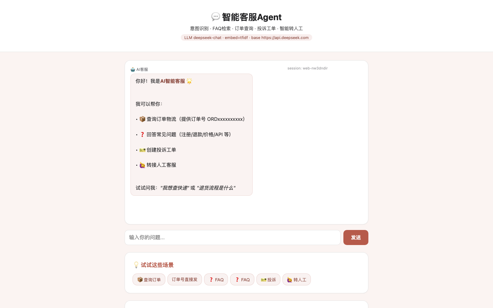

Product interface
界面预览
问答、订单查询、投诉工单与人工升级在同一会话中完成，界面同步展示可直接体验的业务场景。

Project summary
让客服不只回答问题，也能调用工具完成业务动作
系统识别用户意图后选择 FAQ 检索、订单查询、工单创建或人工转接，并在多轮会话中保留必要上下文。
打开在线 Demo →4 Tools业务工具
双路FAQ 召回
可升级转人工
Product capabilities
功能拆解
- 识别 FAQ、订单、投诉与转人工等常见意图
- 语义匹配与关键词检索共同召回 FAQ
- 调用订单查询、知识检索、建单和转人工工具
- 复杂或高风险问题自动升级并保留会话摘要
- Session 级上下文维持多轮对话连贯性
Technical delivery
技术架构
决策层
DeepSeek 判断用户意图并选择需要调用的业务工具。
检索层
Sentence-Transformers 与 TF-IDF 组成双路 FAQ 召回。
会话层
Flask 管理上下文、工具结果、工单与人工升级状态。
Product insight
产品洞察
客服 Agent 的价值不在于更像人聊天，而在于能安全执行查询、建单和升级等动作。工具权限、失败兜底和人工接管机制应与对话能力同时设计。
本 Demo 使用模拟订单和工单数据展示业务流程，不处理真实客户信息。